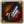

| 伊比利亚 |
| 法兰西 |
| 低地 |
| 不列颠 |
| 北欧及波罗的 |
| 中欧 |
| 北德意志 |
| 南德意志 |
| 意大利 |
| 巴尔干及安纳托利亚 |
| 东欧 |
| 法兰西 | |
| 政府等级 | |
| 主流文化 | |
| 首都 | |
| 政体 | 法兰西封建制 |
| 国教 | |
| 科技组 | |
| 法兰西的理念 |
此信息可能已落后版本，最后更新于1.35 ----
|
| +20% 全国人力 +1 外交声誉 |
| -10% 发展成本
|
|
|
| 革命法兰西的理念 |
此信息可能已落后版本，最后更新于1.35 ----
|
| +5 革命热情最大值 -50% 严酷镇压花费 |
| +15% 围城能力
|
|
|
| “ | 朕即国家。
—— “太阳王”路易十四（1638–1715）
|
” |
法兰西（英文：France）是一个位于西欧法兰西区域的王国。它强大的实力，和丰富的历史趣味事件都让它成为了游戏中最有趣、最受欢迎的国家之一；强大的军力和庞大的体量也让它的容错率比较高，因而也比较适合新手熟悉这个游戏。在1444年，它在北方和东方与  勃艮第接邻，再向东边则是由死对头
勃艮第接邻，再向东边则是由死对头  奥地利掌控的神圣罗马帝国疆界；南方比利牛斯山脉对面是
奥地利掌控的神圣罗马帝国疆界；南方比利牛斯山脉对面是  阿拉贡和
阿拉贡和  卡斯蒂利亚，北方和西南方则是
卡斯蒂利亚，北方和西南方则是  英格兰在欧洲大陆上所剩不多的领地。除了这些国家之外，邻近的国家还有
英格兰在欧洲大陆上所剩不多的领地。除了这些国家之外，邻近的国家还有  萨伏依、
萨伏依、 普罗旺斯、
普罗旺斯、 布列塔尼和
布列塔尼和  纳瓦拉，他们同样值得注意。
纳瓦拉，他们同样值得注意。
开局时，法兰西拥有5个封邑： 阿马尼亚克、
阿马尼亚克、 奥弗涅、
奥弗涅、 波旁、
波旁、 富瓦和
富瓦和  奥尔良。不过，法兰西拥有特有的“
奥尔良。不过，法兰西拥有特有的“ 苏格兰保证独立，并与统治王朝相同的
苏格兰保证独立，并与统治王朝相同的  普罗旺斯结盟；
普罗旺斯结盟； 英格兰手中处在法兰西区域的领土全部是法兰西的核心（除了
英格兰手中处在法兰西区域的领土全部是法兰西的核心（除了
另参见：法兰西任务/皇帝、法兰西任务/基础游戏
法兰西的任务聚焦于彻底击败  英格兰、统合和收复整个法兰西地区、对意大利的野心、干涉神圣罗马帝国内部、以及殖民北美洲。
英格兰、统合和收复整个法兰西地区、对意大利的野心、干涉神圣罗马帝国内部、以及殖民北美洲。
DLC 霸业开启时，法兰西使用新的霸业任务，使其成为游戏中任务最多的国家。
霸业开启时，法兰西使用新的霸业任务，使其成为游戏中任务最多的国家。
两个DLC均未开启时，法兰西只能使用基础任务。
法兰西触发灾难  法国大革命后，可以通过事件“动荡中的共和国”将  国家理念切换至
国家理念切换至  革命法兰西理念。
革命法兰西理念。
法兰西拥有大量的历史趣味事件。除此之外，16世纪的宗教战争和19世纪的大革命分别以特有灾难的形式表现出来。
 新教和
新教和  改革宗在欧洲的崛起导致了法兰西长达三十年的内战，也就是著名的法国宗教战争[1]。这个
改革宗在欧洲的崛起导致了法兰西长达三十年的内战，也就是著名的法国宗教战争[1]。这个  灾难可以发生在
灾难可以发生在  宗教改革时代，如果法国的
宗教改革时代，如果法国的  宗教统一低于 75% ，那么内战的危险就会逐渐浮现。
宗教统一低于 75% ，那么内战的危险就会逐渐浮现。
启蒙思想已经在法国各阶层国民的思想中产生影响。然而法兰西王室仍然穷兵黩武，最终导致了革命的爆发。在  大革命时代，如果法兰西厌战度过高或经济面临崩溃，而且王室拒绝了进行经济和社会改革的要求，
大革命时代，如果法兰西厌战度过高或经济面临崩溃，而且王室拒绝了进行经济和社会改革的要求， 法国大革命就可能发生，国内爆发广泛的反叛、起义，甚至让君主人头落地。
法国大革命就可能发生，国内爆发广泛的反叛、起义，甚至让君主人头落地。
值得一提的是，法国大革命成功后，法国的政体将会变为对军队战斗力有极大加成的革命共和制。在共和国期间会有大量相关的事件被触发，并且拿破仑·波拿巴( 6/
6/ 6/
6/ 6)将有机会成为法国的统治者。革命期间与周边国家的关系将会受到极大的损害，周边国家可能会如史实一样组成反法同盟来共同反对革命。
6)将有机会成为法国的统治者。革命期间与周边国家的关系将会受到极大的损害，周边国家可能会如史实一样组成反法同盟来共同反对革命。
|
|
这条信息可能已不适合当前版本，最后更新于1.35。 |
巴黎科学院为玛丽-索菲·热尔曼的一篇有关弹性理论的论文颁发了一项大奖。她所受的教育来自她父亲图书馆中的书以及与著名数学家（如拉格朗日、勒让德、高斯）的通信。对性别的偏见使得她无法以数学为职业，但索菲·热尔曼是当之无愧的数学家、物理学家、哲学家。
|
|
这条信息可能已不适合当前版本，最后更新于1.35。 |
出生于意大利佛罗伦萨的凯瑟琳·德·美第奇在14岁时就嫁给了法国国王亨利二世。亨利二世因宠爱她的首席情妇戴安·德·普瓦捷而将妻子凯瑟琳排除于国事之外。在他于一次马上长矛比武中被长矛刺中面部而死之后，弗朗索瓦二世成为了国王。凯瑟琳对于他的儿子有很大的影响，他所有正式的讲话都会这样开始：“承蒙王后殿下，我的母亲的好意，我也同意她的所有意见，我命令……”
触发条件
|
平均发生时间
200 月 |
立即生效
| |
让她成为摄政
继续让她做顾问
| |
|
|
这条信息可能已不适合当前版本，最后更新于1.35。 |
歌剧家朱莉·德奥比尼在她年轻时就学会了舞蹈、阅读、绘画、击剑。她和她的击剑老师色让一起来到了马赛，在那里他们表演击剑、在酒馆和集会中唱歌，并以此为生。朱莉·德奥比尼为了一个年轻女子离开了色让，加入了皮埃尔·戈蒂耶的歌剧公司。这对恋人为了逃走，而放火烧毁了修道院。三个月后，德奥比尼回到了她的家人那里，发现她因绑架、盗尸、纵火和未出庭的罪名被判了火刑。
她回到了巴黎并请求她的一位旧爱，阿尔玛涅克伯爵赦免她并给她一个在巴黎歌剧院的位置。虽然观众们喜欢她美妙的嗓音，精湛的演技和雌雄同体版的外表，但她没有如她的演员同事们那么多的朋友。路易·高拉德·杜梅斯尼因骚扰女演员而被德奥比尼揍了一顿，她与谢夫那德之间的斗智斗勇也为人传诵。在她于一个舞会上亲吻了一位年轻女子后，她被三名贵族邀请来决斗并成功击败了他们。虽然她也许有许多缺陷，但仍瑕不掩瑜。我们应该怎么做？
触发条件
|
平均发生时间
200 月 |
立即生效
| |
邀请她来宫廷。
任命她为将军。
让她继续唱歌。
| |
|
|
这条信息可能已不适合当前版本，最后更新于1.35。 |
在$COUNTRY$开始采用十进制的正是女科学家玛丽·克鲁斯。她在夏洛特-罗斯·德古蒙德·拉弗尔斯那里成为了一个有名的作家和老师。她的十进制系统是献给她的赞助人，枢机黎塞留的侄女，“藏红花色王妃”，艾吉永女公爵康巴雷夫人的。这项研究提出了两项基础的革新：用小数点来分隔整数和小数，并用零来表示某一位数不存在。
|
|
这条信息可能已不适合当前版本，最后更新于1.35。 |
由奥兰普·德古热写成的《女权宣言》挑战了我们的社会中男女不平等的现状。她是女权主义与离婚权利的强硬支持者，也是倡导男女政治与法律权利平等的真理之友会的成员。她所撰写的《两性之间的社会契约》提出了性别平等的婚姻。在法国及其殖民地中，哪里有不公，哪里就会有奥兰普·德古热。她反对奴隶制，并为此编写了许多部剧本（如《扎摩尔与米尔扎》与《黑市》）和文章（如《关于黑人的思考》）。她有关女性权利的一段话最近广为流传：“既然女人有被押上断头台的权利，那么她们也必须拥有登上演讲台的权利。”
|
|
这条信息可能已不适合当前版本，最后更新于1.35。 |
[Root.GetAdjective]的人们第一次在杜伊勒里宫见到玛丽·安托瓦内特时，无不为她的人格与美貌所折服，为她白暂的肌肤、稻草色的金发、碧蓝的双眼与高挑的身材所惊叹。她之前是[Root.GetAdjective]的太子妃，而在他的丈夫路易-奥古斯特成为法兰西与纳瓦拉国王后，她也成为了王后。她受到的教育十分有限，主要有关举止与仪表。虽然如此，她起初仍然尝试影响宫廷，但有可能为她带来政治力量的候选人被她的丈夫所阻挡住了。结婚七年后，他们的第一个女儿才在困难中出世。诞下男性继承人的压力一点点地压在了她的肩上，使她不得不通过赌博和购买昂贵的衣裳来宣泄。慢慢地，通过她对之后成为海军部长的卡斯特里耶侯爵，后来成为战争部长的塞居侯爵，后来成为经济部长的查尔斯·亚历山大·德·卡洛讷与后来成为王室部长的布雷特伊男爵的支持，她在政府中获得了最高的地位。海军部长和战争部长尝试组织中间阶级登上海军和陆军的高位，而且玛丽·安托瓦内特也支持这一点。随着她不断地将财富花在衣服，别墅和赌博上，[Root.GetAdjective]越来越认为她是一个道德败坏，挥霍无度，蒙昧无知，比起$COUNTRY$更关心自己祖国的外国王后。这种说法是不公正的，而在第一次失败的名人会议之后，她放弃了她安闲的生活，积极参与政治，并尝试为了她的孩子们拯救这个国家，改变$COUNTRY$民众对她的偏见并辅佐她那抑郁的丈夫。
|
|
这条信息可能已不适合当前版本，最后更新于1.35。 |
来到$COUNTRY$之后，杜莎夫人不断地在各地展览她收藏的蜡像，其中包括路易十六、玛丽·安托瓦内特、马拉与罗伯斯庇尔。出生于斯特拉斯堡的玛丽在父亲去世两个月后来到了伯尔尼，与她同行的是她的母亲，医生和蜡像雕塑家腓力·库尔提乌斯博士的管家。这位雕塑家把蜡像的艺术传授给了她，并在她表现出巨大的天赋时雇佣她为蜡像师。她的第一尊蜡像是伏尔泰。虽然我们不确定她说的是不是实话，但是她声称曾被聘请来教路易十六的妹妹伊丽莎白制作还愿祭上的祭品并受到了王室的青睐。有关她找遍被处决者的尸体堆以寻找最美丽的脑袋来制作蜡像的传闻或许是真的——因为我们知道她确实被聘请来为大革命中的受害者制作死亡面具。
|
|
这条信息可能已不适合当前版本，最后更新于1.35。 |
长着一头鲜艳的红发并有着与头发一般火烈的脾气的海盗安妮·博尼与她的第二任丈夫，海盗船复仇号的船长杰克“花斑”雷克汉姆一同被捕了。博尼和雷克汉姆勇敢地抵抗着乔纳森·巴内特的部队，但因为他们的船员醉得太厉害而不得不投降被捕。雷克汉姆被绞死，但博尼以怀孕为由请求赦免，并最终获释。在儿子出生不就她便获得了自由身。他们夫妻两人在加勒比海域横行了数月，登上较小的商船并将上面所有的财宝全部劫走。博尼与男人们并肩战斗，用她在战斗中所表现的能力与技巧赢得了船员们的尊敬。我们可以利用这个女人的能力，让她成为一位海军将领或者是顾问。
触发条件
|
平均发生时间
200 月
|
立即生效
| |
那么就是顾问了。
让她成为海军将领，但是也许我们需要找人看着她
| |
|
|
这条信息可能已不适合当前版本，最后更新于1.35。 |
海盗船复仇号的船长杰克“花斑”雷克汉姆举办一场朗姆酒派对时，海盗猎手乔纳森·巴内特一轮齐射的攻击之下瞬间使他们的战舰崩溃了。此时船员们不是四处逃窜便是醉得无法战斗，只剩下玛丽·瑞德和安妮·博尼来抵抗巴内特的部队。他们最终被击败，船长雷克汉姆投降。这些海盗全部被捕，并因海盗罪名被判处绞刑。两位女子则以腹中的孩子求情，使得她们在孩子出生前暂时被赦免。玛丽·瑞德告诉了我们，在她加入雷克汉姆与博尼之前，她是一位船长遗孀的私生子。她的母亲把她打扮成男孩，并给她起名他马克，以便使她获得死去哥哥的祖母的救济。她少年时期曾当过一段时间的仆人，之后便开始了海员的生涯。这段时间，她仍然身着男装，加入了英国军队并在战斗中证明了自己的能力。在与一名佛兰德士兵坠入爱河之后，他们用军饷和军中朋友的礼物买了一家小旅馆，而直到他们结婚时，这些朋友们才知道“马克”原来其实是“玛丽”。他的丈夫年纪轻轻就去世了，于是她便重新穿上男装加入了军队，但当时没有战争，她也没有办法得到提拔。在退伍之后，她在船上被海盗劫持，并被迫成为了他们的一员。在受到了国王的赦免并被派往私掠船上服役后，她与船员一起哗变并重回了海盗的本行。之后她便碰到了海盗船船长杰克“花斑”雷克汉姆和他的同伴安妮·博尼。
触发条件
|
平均发生时间
200 月
|
立即生效
| |
真是可惜，等她生下孩子就要把她绞死。
赦免她，让她成为我们的一位海军将领。
| |
法兰西能被主流文化属于法兰西文化组或者是巴斯克文化的国家成立，如果它不复存在。
|
|
这条信息可能已不适合当前版本，最后更新于1.35。 |
今年将会是标志着我国进入进化时期的一年。传统的封建体系将让位给一个更现代化的集权国家。尽管项目预算失误以及军事战役频发，财政状况历经了起起伏伏，但我们还是成功将我国转变成了欧洲最具统治力的强国之一。
| 潜在需求 | 接受 |
效果
| |
AI决议因子：
法兰西也能通过法兰西公国任务#宣称王位成立。
法兰西有若干个专属的决议，脚本代码位于：/Europa Universalis IV/decisions/France.txt。其中“将宫廷迁往凡尔赛”在DLC  皇帝或
皇帝或  利维坦启用时不可用；““朕即国家””在DLC
利维坦启用时不可用；““朕即国家””在DLC  皇帝启用时不可通过：如上DLC开启时，需要通过完成法兰西任务中的对应任务来获得相同的修正和加成。
皇帝启用时不可通过：如上DLC开启时，需要通过完成法兰西任务中的对应任务来获得相同的修正和加成。
|
|
这条信息可能已不适合当前版本，最后更新于1.35。 |
国家已经被数不清的各种党派与教派撕扯得支离破碎，以至于最正当合法的团体反而最为势单力孤。天主给了我们面对这场风暴的力量，我们最终穿越了巨浪，抵达了安全的港湾，恢复了国家的和平。
潜在需求
|
接受
|
效果
| |
AI决议因子：
0：
|
|
这条信息可能已不适合当前版本，最后更新于1.35。 |
我们认为完全撤销南特敕令及其后续特殊条款，并取消此前一切有利于上述宗教的行为，是最好的选择。
潜在需求
|
接受
|
效果
| |
AI决议因子：
|
|
这条信息可能已不适合当前版本，最后更新于1.35。 |
小村庄凡尔赛周围的土地曾是一片优良的狩猎场地，这里的狩猎行宫如今已扩展成了宏伟的城堡。现在应当是把法兰西政府迁往那里的时候了吧？
潜在需求
|
接受
|
效果
| |
AI决议因子：
决议“贞德的命运”可以被任意符合条件的国家触发。
此外，DLC霸业开启时，完成任务“加莱港口”将允许法国通过  英格兰的专属决议“指定加莱为主港口”。
英格兰的专属决议“指定加莱为主港口”。
|
|
这条信息可能已不适合当前版本，最后更新于1.35。 |
为了更有效率地对货物征税我们需要集中它们。如我们把加莱作为进口羊毛的唯一港口，我们的税收肯定会增加。
| 潜在需求 | 接受
|
效果
| |
AI决议因子：
法兰西开局时的外交关系已经达到了上限，因此必须谨慎地选择自己盟友： 普罗旺斯容易被
普罗旺斯容易被 教宗国敌视，使得法兰西也遭到牵连而被绝罚，最好尽早断开与普罗旺斯的盟约并将其吞并或附庸；如果不打算拉上
教宗国敌视，使得法兰西也遭到牵连而被绝罚，最好尽早断开与普罗旺斯的盟约并将其吞并或附庸；如果不打算拉上 苏格兰去进攻
苏格兰去进攻 英格兰，可以解除对他的独立保障；
英格兰，可以解除对他的独立保障； 勃艮第可以通过事件联统，建议与其结盟和联姻来保持良好关系（如果他不宿敌法兰西的话）；法国的任务树给予了对
勃艮第可以通过事件联统，建议与其结盟和联姻来保持良好关系（如果他不宿敌法兰西的话）；法国的任务树给予了对 西班牙“重建联合统治”的战争理由，因此比起在前期就去进攻伊比利亚地区，不如放任
西班牙“重建联合统治”的战争理由，因此比起在前期就去进攻伊比利亚地区，不如放任 卡斯蒂利亚在新大陆殖民扩张并在后期继承其殖民地，既然如此，在前期与之结盟自然也是可以考虑的。如果还有多余的外交关系，可以给
卡斯蒂利亚在新大陆殖民扩张并在后期继承其殖民地，既然如此，在前期与之结盟自然也是可以考虑的。如果还有多余的外交关系，可以给 奥斯曼，作为对抗神罗的长远盟友，或是扶植几个傀儡国，用于更低AE的扩张。
奥斯曼，作为对抗神罗的长远盟友，或是扶植几个傀儡国，用于更低AE的扩张。
法兰西应该聚焦于尽早统一其文化核心区。这不会太难，因为  英格兰部队比法兰西更少并且被迫实施海上入侵（登陆而且战败没有退路）。从那以后，法兰西有四条常见扩张路径：
英格兰部队比法兰西更少并且被迫实施海上入侵（登陆而且战败没有退路）。从那以后，法兰西有四条常见扩张路径：
第一条，向意大利扩张。法国玩家有任务去扩张进入意大利，那是一个富裕的区域而且可能有游戏中最高的发展度。然而，这一区域竞争激烈，还可能导致法国被一些强国敌视，例如神圣罗马皇帝、 阿拉贡、
阿拉贡、 西班牙等，还容易因为侵略扩张过高而导致与周边诸国，尤其是与
西班牙等，还容易因为侵略扩张过高而导致与周边诸国，尤其是与 教宗国的关系恶化。在帝国事件“影子王国”发生后，AI皇帝通常选择放弃意大利，这会使那些与皇帝关系不好的意大利国家退出神圣罗马帝国，从而降低了扩张的难度。如果玩家有意进入意大利，早期的一个方法是在
教宗国的关系恶化。在帝国事件“影子王国”发生后，AI皇帝通常选择放弃意大利，这会使那些与皇帝关系不好的意大利国家退出神圣罗马帝国，从而降低了扩张的难度。如果玩家有意进入意大利，早期的一个方法是在  地理大发现时代得到“
地理大发现时代得到“ 阿拉贡得到
阿拉贡得到  那不勒斯，这是一个相当大而诱人的奖励，但在1.30版本后
那不勒斯，这是一个相当大而诱人的奖励，但在1.30版本后 那不勒斯经常会很快从宗主那里独立。不过，事件和任务树也能给予法国对
那不勒斯经常会很快从宗主那里独立。不过，事件和任务树也能给予法国对 那不勒斯的“重建联合统治”的宣战理由，这使得玩家仍有机会在游戏中后期快速控制意大利南部。结合对
那不勒斯的“重建联合统治”的宣战理由，这使得玩家仍有机会在游戏中后期快速控制意大利南部。结合对  萨伏依的征服战争以及事件给予的对米兰的联统cb，法兰西有可能在早期就获取对意大利的霸主地位。
萨伏依的征服战争以及事件给予的对米兰的联统cb，法兰西有可能在早期就获取对意大利的霸主地位。
第二条是向低地国家扩张。就像意大利，它的省份富裕而且还能加强法兰西在英吉利海峡的贸易竞争力。在这一地区最主要最强大的敌人是 勃艮第，然而，如果能够获得一个不被
勃艮第，然而，如果能够获得一个不被 勃艮第宿敌的开局，进而与其结盟和联姻，法兰西就有机会通过事件链直接继承整个低地地区。如果法兰西不得不通过战争进行扩张，要务必注意侵略扩张，尤其是当玛丽选择嫁给其他国王而法兰西决定用武力夺取勃艮第统治权时。此外，在游戏的中后期，低地地区有可能爆发大规模的起义，这使得玩家有可能失去这些土地。
勃艮第宿敌的开局，进而与其结盟和联姻，法兰西就有机会通过事件链直接继承整个低地地区。如果法兰西不得不通过战争进行扩张，要务必注意侵略扩张，尤其是当玛丽选择嫁给其他国王而法兰西决定用武力夺取勃艮第统治权时。此外，在游戏的中后期，低地地区有可能爆发大规模的起义，这使得玩家有可能失去这些土地。
第三条是向北非扩张。历史上法兰西入侵过阿尔及利亚，该地区通常不太会有其它列强来竞争，而且在该地区的国家前期通常很弱，特别是  特莱姆森，消灭可恶的海盗国家也对法国保护自己在地中海沿海地区的经济有帮助。然而，该地区是
特莱姆森，消灭可恶的海盗国家也对法国保护自己在地中海沿海地区的经济有帮助。然而，该地区是  穆斯林，使得它更难转化并恶化了叛乱。而且，一旦这里的国家与
穆斯林，使得它更难转化并恶化了叛乱。而且，一旦这里的国家与 奥斯曼结盟，将使得武力扩张的难度大大增加。该区域的发展度不高，这意味着从它获得的收益远小于向在意大利或者低地国家扩张，但它也更容易夺取和维持，还增加了玩家的扩张方向，因为向穆斯林开战不会使欧洲基督教国家对法国的AE增加太多。如果玩家要这么做，
奥斯曼结盟，将使得武力扩张的难度大大增加。该区域的发展度不高，这意味着从它获得的收益远小于向在意大利或者低地国家扩张，但它也更容易夺取和维持，还增加了玩家的扩张方向，因为向穆斯林开战不会使欧洲基督教国家对法国的AE增加太多。如果玩家要这么做， 宗教理念或者
宗教理念或者  人文理念必须早开（不过推荐宗教理念，为了实际转化省份的长期收益），或者选择将北非地区设为贸易公司。
人文理念必须早开（不过推荐宗教理念，为了实际转化省份的长期收益），或者选择将北非地区设为贸易公司。
第四条是殖民。 英格兰、
英格兰、 西班牙和
西班牙和  葡萄牙通过更好的移民增长，国家理念带来的更多的殖民者，和不同的殖民事件将会有更大的殖民扩张收益。然而，法兰西的国家理念“
葡萄牙通过更好的移民增长，国家理念带来的更多的殖民者，和不同的殖民事件将会有更大的殖民扩张收益。然而，法兰西的国家理念“
 法兰西通过夺取在“法兰西文化组”之内的领土来增加它的力量。在其它文化组的邻国将获得减少 50% 的
法兰西通过夺取在“法兰西文化组”之内的领土来增加它的力量。在其它文化组的邻国将获得减少 50% 的  侵略性扩张冲击。
侵略性扩张冲击。
有“法兰西文化领土”的主要国家是：
开局就能开战，如果等待对方通过曼恩事件宣战则能呼叫更多盟友并且避免与 英格兰的盟友作战，但强烈推荐主动宣战，因为这样在割取有核心省份时造成的侵略扩张和所需的战争分数都更少。
英格兰的盟友作战，但强烈推荐主动宣战，因为这样在割取有核心省份时造成的侵略扩张和所需的战争分数都更少。 英格兰和
英格兰和  葡萄牙开局有军事同盟，所以两个国家都会加入这场战争。用高战争分数打败葡萄牙并单独议和可以割取
葡萄牙开局有军事同盟，所以两个国家都会加入这场战争。用高战争分数打败葡萄牙并单独议和可以割取 英格兰，比起有风险的海上入侵，那是一条安全得多的途径。可以考虑在爱尔兰地区扶持一个附庸来降低异文化惩罚，但这会耗费一个宝贵的外交关系，而且附庸国往往不能及时造到玩家想要省份的宣称。
英格兰，比起有风险的海上入侵，那是一条安全得多的途径。可以考虑在爱尔兰地区扶持一个附庸来降低异文化惩罚，但这会耗费一个宝贵的外交关系，而且附庸国往往不能及时造到玩家想要省份的宣称。
 100% 战争分数能拿，为了任务或者战略目的。
100% 战争分数能拿，为了任务或者战略目的。
英格兰具有强大的海军力量。战争爆发后海军应尽量避免与英格兰海军交战，如果此时通过海军运输军队登岛，则最大的可能性是你的军队会葬身鱼腹。
通过许诺土地的方式，法兰西能在进攻战中召唤盟友，可能渴望英格兰土地的国家有 苏格兰、
苏格兰、 勃艮第和
勃艮第和 卡斯蒂利亚，但不是每局游戏都会，所以你可能需要刷开局。
卡斯蒂利亚，但不是每局游戏都会，所以你可能需要刷开局。
由于在不列颠岛与英军主力决战有一定风险被击败，且一旦战争爆发，英格兰海军封锁意味着位于苏格兰的主力部队已经没有退路，一旦决战被击败，英军乘胜追击占领苏格兰，则法军主力有全军覆没的危险。因此本土作战可能是更稳妥的一种选择。如果选择这种思路，则最好不要将  苏格兰拖入战争。因为苏格兰陆军实力较弱，无法单独面对英格兰陆军的进攻。一旦苏格兰被击败并被占领全境，很大的可能性苏格兰会以割地赔款为代价单独求和，苏格兰和英格兰的实力对比会进一步失衡，这无疑是玩家不希望看到的。战争爆发后，迅速占领英格兰在法兰西的所有地区并密切关注英格兰的登陆情况。一旦发现英格兰正在使用海军运输登陆本土，则迅速派遣部队提前到达登陆省份等待英军登陆。由于跨海登陆作战会有巨大的作战惩罚，因此以逸待劳且有人数优势的法军将有更大的几率击败英军。你的盟友和附庸应该足够应付葡萄牙，但有时需要你去帮一把，即使如此仍不建议将主力调离本土太远，因为你需要长时间控制战争目标地来增加战争分数，而能够进行海上炮击的英格兰围城速度很快。随着战斗胜利与时间流逝，葡萄牙最终能够单独议和，在英格兰因为灾难“玫瑰战争”而爆发出叛军后，你应该能索要到100%的战争分数。如果分数不够，你可能需要少拿几个省份，推荐选择你在欧陆上的核心省份，这样有助于在下一次战争中通过控制战争目标来获取战争分数。
苏格兰拖入战争。因为苏格兰陆军实力较弱，无法单独面对英格兰陆军的进攻。一旦苏格兰被击败并被占领全境，很大的可能性苏格兰会以割地赔款为代价单独求和，苏格兰和英格兰的实力对比会进一步失衡，这无疑是玩家不希望看到的。战争爆发后，迅速占领英格兰在法兰西的所有地区并密切关注英格兰的登陆情况。一旦发现英格兰正在使用海军运输登陆本土，则迅速派遣部队提前到达登陆省份等待英军登陆。由于跨海登陆作战会有巨大的作战惩罚，因此以逸待劳且有人数优势的法军将有更大的几率击败英军。你的盟友和附庸应该足够应付葡萄牙，但有时需要你去帮一把，即使如此仍不建议将主力调离本土太远，因为你需要长时间控制战争目标地来增加战争分数，而能够进行海上炮击的英格兰围城速度很快。随着战斗胜利与时间流逝，葡萄牙最终能够单独议和，在英格兰因为灾难“玫瑰战争”而爆发出叛军后，你应该能索要到100%的战争分数。如果分数不够，你可能需要少拿几个省份，推荐选择你在欧陆上的核心省份，这样有助于在下一次战争中通过控制战争目标来获取战争分数。
更有风险的行为是提前向 苏格兰索要军通并从不列颠北部发起进攻。开局时英格兰的所有部队分为两个兵团驻扎于岛上，总量与法兰西自己的部队相当。如果玩家召唤了苏格兰进战，这些部队一般会一直留在岛上并试图将苏格兰先行赶出战争，在这种情况下需要保持主力与苏格兰一同行动，直到击溃英格兰的主力。如果玩家没有召唤苏格兰参战并将部队保持在英格兰的视野外，对方最终会将自己的部队运上欧陆，使法兰西能更安心的围城。由于大量部队被调离，玩家在欧陆上的压力会大大增加，最坏的情况下，英格兰和葡萄牙会在玩家围下伦敦前先围下巴黎，如果没有强力盟友，可能需要考虑将几个附庸设为卫戍国来增加他们的战斗力。
苏格兰索要军通并从不列颠北部发起进攻。开局时英格兰的所有部队分为两个兵团驻扎于岛上，总量与法兰西自己的部队相当。如果玩家召唤了苏格兰进战，这些部队一般会一直留在岛上并试图将苏格兰先行赶出战争，在这种情况下需要保持主力与苏格兰一同行动，直到击溃英格兰的主力。如果玩家没有召唤苏格兰参战并将部队保持在英格兰的视野外，对方最终会将自己的部队运上欧陆，使法兰西能更安心的围城。由于大量部队被调离，玩家在欧陆上的压力会大大增加，最坏的情况下，英格兰和葡萄牙会在玩家围下伦敦前先围下巴黎，如果没有强力盟友，可能需要考虑将几个附庸设为卫戍国来增加他们的战斗力。
如果玩家占领了英格兰在不列颠岛上的要塞，建议割走其北部的沼泽要塞以便于下一次征服，可以考虑释放 诺森伯兰为附庸，他在英格兰内有不少省份。
诺森伯兰为附庸，他在英格兰内有不少省份。
在与  英格兰和法国小国的战争之后，玩家可以攻击
英格兰和法国小国的战争之后，玩家可以攻击  阿拉贡，如果 伊比利亚婚礼（仍然）还没有在
阿拉贡，如果 伊比利亚婚礼（仍然）还没有在  卡斯蒂利亚的帮助下发生，去夺取
卡斯蒂利亚的帮助下发生，去夺取 那不勒斯作为主权国家或者甚至转移它给法兰西，如果可能的话，那会让他在未来的征服更容易些。
那不勒斯作为主权国家或者甚至转移它给法兰西，如果可能的话，那会让他在未来的征服更容易些。同样地可以使用巴利阿里群岛释放 在1.28版本中，加泰罗尼亚的核心一分为三， 加泰罗尼亚并且用其在西班牙地中海沿岸的核心来帮助缓解在该地区的
加泰罗尼亚并且用其在西班牙地中海沿岸的核心来帮助缓解在该地区的  侵略性扩张冲击。
侵略性扩张冲击。 巴伦西亚和
巴伦西亚和  马略卡各占一个地区，
马略卡各占一个地区， 加泰罗尼亚只剩下了北部的五个省份。或许等待一个合适的时机，收复阿拉贡的核心更划算。
加泰罗尼亚只剩下了北部的五个省份。或许等待一个合适的时机，收复阿拉贡的核心更划算。
在进行了上述所有战争之后，年份应该是1490到1500年左右。它是一个完美的时机，因为在1490年 影子王国 事件发生了，把所有意大利小国从神圣罗马帝国移除，并且使得它们的征服真的很容易，如果玩家没有设法当上皇帝。到1490年玩家可能也已准备好结盟强有力的  奥斯曼。奥斯曼陆军将有助于处理
奥斯曼。奥斯曼陆军将有助于处理  奥地利、
奥地利、 匈牙利或者任何结盟意大利小国的大国。之后的征服应该很容易，而且玩家将很快享有全部意大利的财富和北意大利高度发展的省份。不过，玩家应该小心
匈牙利或者任何结盟意大利小国的大国。之后的征服应该很容易，而且玩家将很快享有全部意大利的财富和北意大利高度发展的省份。不过，玩家应该小心  侵略性扩张、
侵略性扩张、 过度扩张和这些省份高昂的
过度扩张和这些省份高昂的  造核花费。
造核花费。
在这之后，游戏对玩家完全开放。如果正在打一局主动的殖民游戏，法兰西强大的军事将允许玩家获得另一个殖民大国难以取得的成就，像是  奥地利。能扩张到任何地方，可能性是无限的。
奥地利。能扩张到任何地方，可能性是无限的。但是玩家必须记住：法兰西是一个军事强国，不应试图拥有贸易或者去统一神圣罗马帝国。这里的目标是去“地图填色”，去征服，去通过军事变得更大。此处不敢苟同，法国同时靠近两个贸易终点，完全可以靠贸易维持起帝国的运转，而神圣罗马帝国的改革效果如此诱人，几乎每个天主教君主都应该垂涎它的帝位。
 奥地利与法兰西是历史宿敌，这使得两者间的关系几乎不可能缓和，如果奥地利控制着皇位，玩家在神圣罗马帝国境内的扩张几乎总是会遭到她的阻挠。通过选择外交理念或是影响理念，玩家有机会当上神圣罗马帝国的皇帝，减小在帝国境内扩张的难度，并享受到帝国级政府与帝国改革的加成。
奥地利与法兰西是历史宿敌，这使得两者间的关系几乎不可能缓和，如果奥地利控制着皇位，玩家在神圣罗马帝国境内的扩张几乎总是会遭到她的阻挠。通过选择外交理念或是影响理念，玩家有机会当上神圣罗马帝国的皇帝，减小在帝国境内扩张的难度，并享受到帝国级政府与帝国改革的加成。
1.30后法国整体的军事实力得到了加强，这使得她有可能在开局时就解散神圣罗马帝国。这需要七个选帝侯均不设法国为宿敌且每个选帝侯的宿敌中至多有一个是其他选帝侯。开局时先不要设置宿敌，接着，试着与所有可能结盟的选帝侯结盟，然后设置奥地利为宿敌并以羞辱宿敌的理由向其宣战，占领皇帝与敌对选帝侯的首都后就能解散神罗了。如果太多选帝侯与皇帝结盟，试着去攻击皇帝的盟友，例如 匈牙利。要注意你在与皇帝和平前不能攻击其他神罗成员，所以你需要保证在一场战争中攻击到所有不与你结盟的选帝侯。
匈牙利。要注意你在与皇帝和平前不能攻击其他神罗成员，所以你需要保证在一场战争中攻击到所有不与你结盟的选帝侯。
1.30任务树大改，加入了意大利雄心。只要消灭 普罗旺斯，
普罗旺斯， 勃艮第，
勃艮第，  萨伏依，
萨伏依， 米兰与
米兰与 那不勒斯就可以获得联统
那不勒斯就可以获得联统 西班牙的战争借口。
西班牙的战争借口。
如果你选择走这个任务树，那么开局就应该与主导国 卡斯蒂利亚搞好关系。与其结盟能助你打败
卡斯蒂利亚搞好关系。与其结盟能助你打败 英格兰。
英格兰。 阿拉贡在第一任君主死后就会有事件放出
阿拉贡在第一任君主死后就会有事件放出 那不勒斯，概率几乎是百分之一百，
那不勒斯，概率几乎是百分之一百， 米兰会因继承危机而被其他国家宣称王位，因此进攻意大利ae更低，收益更高，阻力更小。建议留下
米兰会因继承危机而被其他国家宣称王位，因此进攻意大利ae更低，收益更高，阻力更小。建议留下 米兰和
米兰和 那不勒斯，吞掉其他国家。当你一统法兰西和意大利时，时机就成熟了。
那不勒斯，吞掉其他国家。当你一统法兰西和意大利时，时机就成熟了。
由于1.30版本修改了教廷， 教宗国 被变相加强。
教宗国 被变相加强。 那不勒斯往往挡不住
那不勒斯往往挡不住 教宗国 的进攻。如果这样，与
教宗国 的进攻。如果这样，与 教宗国 的一战不可避免。想避免因关系太差而被绝罚的最好方法就是改信新教。如果真的要与教宗决裂，那就应做得彻底一些，收回南意大利，阿维尼翁甚至攻占罗马获得宗教增益，都是不错的选择。
教宗国 的一战不可避免。想避免因关系太差而被绝罚的最好方法就是改信新教。如果真的要与教宗决裂，那就应做得彻底一些，收回南意大利，阿维尼翁甚至攻占罗马获得宗教增益，都是不错的选择。
如果担心 英格兰的扩张，可以与
英格兰的扩张，可以与 苏格兰一同进军并夺取其土地，不要去夺取低地和阿尔萨斯
苏格兰一同进军并夺取其土地，不要去夺取低地和阿尔萨斯  洛林因为ae太高。不建议趁卡卡羽翼未丰就发动联统战争，那样你就只能得到伊比利亚。一般在1600年左右专制主义时代刚开始时发动收益最大。
洛林因为ae太高。不建议趁卡卡羽翼未丰就发动联统战争，那样你就只能得到伊比利亚。一般在1600年左右专制主义时代刚开始时发动收益最大。
相对于一些欧洲国家， 西班牙在中后期确实强，但相比于法兰西还是相当逊色。当教改时代大方阵buff消失，专制主义时代法兰西火枪出现时，当法兰西点出质量与防守，开出黄金时代时，联统战争就会相当顺利。当联统成功，你就多了一个稳固的大后方和一群强有力的小弟（殖民地），由于法兰西也是殖民国家，联统
西班牙在中后期确实强，但相比于法兰西还是相当逊色。当教改时代大方阵buff消失，专制主义时代法兰西火枪出现时，当法兰西点出质量与防守，开出黄金时代时，联统战争就会相当顺利。当联统成功，你就多了一个稳固的大后方和一群强有力的小弟（殖民地），由于法兰西也是殖民国家，联统 西班牙相当于占据整个新大陆，你的实力将大大增加，在中后期可以无所不为了。
西班牙相当于占据整个新大陆，你的实力将大大增加，在中后期可以无所不为了。
在宗教改革期间，法兰西得到一个特殊的  灾难，
灾难， 灾难，但是有不同的事件和触发条件（这个灾难能发动在如果法兰西只拥有 1 个基督教省份不遵循国教并且有少于 75% 宗教统一。条件更加宽松，哪怕只剩下3或4个省份，也会爆发灾难）。因为这个灾难有非常高的几率发生，玩家可以选择保留
灾难，但是有不同的事件和触发条件（这个灾难能发动在如果法兰西只拥有 1 个基督教省份不遵循国教并且有少于 75% 宗教统一。条件更加宽松，哪怕只剩下3或4个省份，也会爆发灾难）。因为这个灾难有非常高的几率发生，玩家可以选择保留  天主教或者改宗
天主教或者改宗  新教（或是
新教（或是  改革宗）并且两者都有同样的结果。选择取决于玩家。不过应该记住，改宗新教将从殖民地移除《
改革宗）并且两者都有同样的结果。选择取决于玩家。不过应该记住，改宗新教将从殖民地移除《 士气或者
士气或者  训练度优势或者降低
训练度优势或者降低  开发花费。如果法兰西加入宗教联盟，玩家能尝试在宗教联盟战争期间解散神圣罗马帝国，如果皇帝和全部选帝侯卷入其中。这将降低
开发花费。如果法兰西加入宗教联盟，玩家能尝试在宗教联盟战争期间解散神圣罗马帝国，如果皇帝和全部选帝侯卷入其中。这将降低  侵略性扩张在全德意志 50% 并且玩家将可能容易地征服德意志小国，现在没有皇帝会保护它们了。
侵略性扩张在全德意志 50% 并且玩家将可能容易地征服德意志小国，现在没有皇帝会保护它们了。
在进入大革命时代后，法国将会拥有一个独有的灾难——法国大革命。
当革命发源地出现在地图上后会向周围省份散播革命，距离近、专制度高、同一大洲的省份更容易被散播。如果玩家想要转变为革命政体体验法国的独有事件，最好通过SL来让革命发源地距离自己的国家更近。当被散播了革命思想的省份占比达到一定程度后，灾难法国大革命就会出现在稳定与扩张界面中，高专制度、低稳定、贷款数量、高厌战度、破产、作为欧洲最强国都会增加灾难的进度增长。
当散播了革命思想的省份占比达到100%后，能够在政府界面选择接纳革命思想。此外，当灾难法国大革命达到100%时，也会给玩家一个选择来立即转换为革命政体。如果玩家不是第一个革命国家，可以通过镇压革命的战争借口向革命目标拥有国宣战，在和约中提供条件来使对方向自己输出革命，这会使你的所有省份立即被传播革命思想。
在大革命爆发后，君主制将会被推翻，革命共和国体制将会建立起来，法兰西将会得到极大的士气和军队维护费用加成，保皇派、吉伦特派和雅各宾派也都有不同的国家加成。“输出革命”将成为法兰西对其他非革命国家的永久宣战理由。法兰西原本就实力强劲的陆军在加上大革命的加成，可以说革命法兰西基本上是可以单挑全欧洲的存在（当然前提是此时其他欧洲国家还足以对革命前的法兰西形成挑战）。并且在大革命期间会有很多历史事件，诸如拿破仑（6/5/6）成为执政官以及圣尼凯斯街爆炸案等。在革命期间，玩家可以体验历史上法兰西军队在拿破仑的带领下驰骋欧洲、君临天下的快感。总之，法国大革命对于后期的游戏体验是一次极大的提升，同时也增加了游戏的趣味性和游戏性。
注意革命会将国家变为共和制，这会使法兰西失去王室联姻等外交功能，如果法兰西是神罗皇帝则会失去帝位，如果此时帝国已经通过了改革“宣布永久世袭”，神罗会被解散。不过只要被联统国仍是君主制，联合统治就不会断开。在革命后如果共和传统过低，政体将转换为革命帝国制，政体转换也能政府改革的最后一层来完成。这使得玩家回归君主制，但仍有着强大的政体加成。革命后会使用“革命热情”来替代专制度，满革命热情所能提供的行政效率比满专制度更低，但前者更容易获取。
如果革命发源地出现后很长一段时间都没有国家革命，或是所有革命国家都遭到镇压，革命将会结束。
这个选择将允许与邻国建立更好的关系，并避免包围网。在“间谍”理念组中的降低侵略性扩张（-20%）和来自外交理念组的额外的  外交官当然是这个选择最有用的东西。
外交官当然是这个选择最有用的东西。
玩家当然需要去殖民一点地方，因为建造法国军队到最大军队上限并且完全地维护它将对法兰西引起中等规模的赤字。殖民 勃艮第的荷兰土地，玩家可以殖民
勃艮第的荷兰土地，玩家可以殖民
质量将提供更好的作战能力给全部三种单位和更好的将军。这有助于强化法国的军事去和  奥地利或者可能的
奥地利或者可能的  普鲁士之类的敌人战斗。海军奖励会帮助打败不列颠海军。防守，在另一边，提供更便宜的陆军和要塞防御，结合第二个国家理念，将提供巨大的奖励 +35% 陆军士气。
普鲁士之类的敌人战斗。海军奖励会帮助打败不列颠海军。防守，在另一边，提供更便宜的陆军和要塞防御，结合第二个国家理念，将提供巨大的奖励 +35% 陆军士气。
更多的部队总是有用的。这个结合质量或防御会使得法国陆军几乎不可阻挡。这也能非常有帮助，如果玩家正在面对包围网战争而且不得不派遣部队去各条前线，当然，更多的部队意味着更多的单位去守备新世界。
这允许更快的殖民活动，如果法兰西正在玩一局积极的殖民游戏，而且能因此帮助从关税或者贸易公司赚更多的钱，如果启用了  国富论 DLC。
国富论 DLC。
要记住这完全是可选的，而且这能根据玩家的游戏改变。例如：如果玩家正在努力征服北非的穆斯林，采用  宗教或
宗教或  人文理念取代探索或数量理念可能更有用。
人文理念取代探索或数量理念可能更有用。

Azur semé de lis or 洒满金百合的蔚蓝 用法兰西开局，拥有全部法国的核心。 |

Better than Napoleon 超越拿破仑 使用法国，拥有维也纳、柏林和莫斯科作为核心省份。 |

|

Napoleon’s Ambition 拿破仑的野望 作为革命法兰西，将革命传播到10个国家。 |
视频战报
| 伊比利亚 |
| 法兰西 |
| 低地 |
| 不列颠 |
| 北欧及波罗的 |
| 中欧 |
| 北德意志 |
| 南德意志 |
| 意大利 |
| 巴尔干及安纳托利亚 |
| 东欧 |
| 北非 |
| 东非 |
| 中非 |
| 东南非 |
| 西非 |
| 西南非 |
| 近东 |
| 波斯及中亚 |
| 北亚 |
| 东亚 |
| 东南亚 |
| 印度 |
| 中美洲 |
| 墨西哥 |
| 北美东北 |
| 北美东南 |
| 北美中西部 |
| 部落联盟国家 |
| 前殖民领国家 | |
| 海盗共和国 |
| 南美北部 |
| 安第斯山区 |
| 南美东部 |
| 南美南部 |
| 前殖民领国家 |
| 澳大利亚 |
| 南太平洋 |
| 北太平洋 |
| 前殖民领国家 |